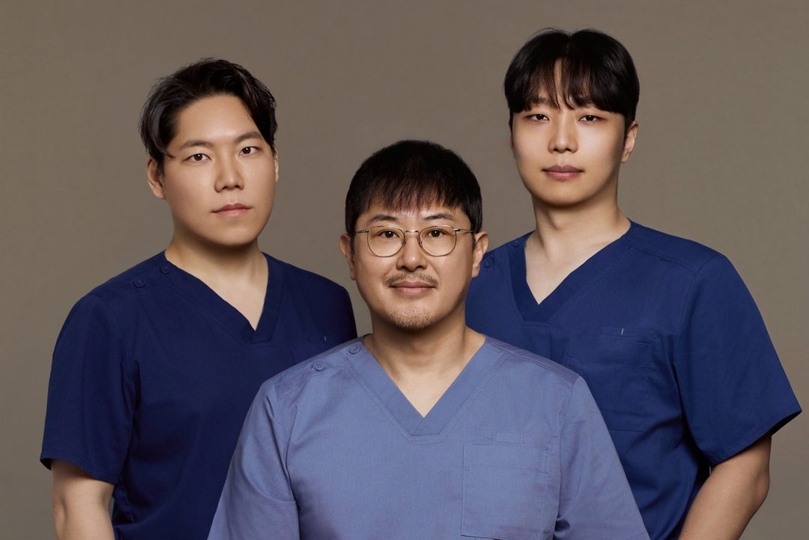

울쎄라피프라임, 300샷이면 될까요 600샷은 받아야 할까요?
처짐이 신경 쓰여 울쎄라피프라임을 알아보다 보면 가장 먼저 부딪히는 고민이 샷 수입니다. 샷 수를 정하는 기준부터 통증과 마취, 함께 고려하는 시술, 11월 이벤트 가격까지 정리해 드립니다.
300샷과 600샷, 일반적인 기준
-
울쎄라피프라임 300샷
턱선, 심부볼 등 특정 부위의 탄력이 고민일 때 주로 고려합니다.
-
울쎄라피프라임 600샷
이마, 중안면, 턱선까지 얼굴 전체를 고려할 때 주로 고려합니다.
다만 이는 일반적인 기준일 뿐입니다. 피부 두께, 처짐 부위와 정도, 지방량이 사람마다 달라 적정 샷 수도 다릅니다. 의료진과 직접 상담한 뒤 결정하시는 것이 가장 정확합니다.
샷 수보다 중요한 것, 나에게 맞는 디자인
울쎄라는 피부 깊이에 따라 1.5mm, 3.0mm, 4.5mm 팁을 구분해 사용하며, 피부 두께와 처짐 정도에 따라 팁 종류와 에너지 강도를 달리 설계합니다.
일부 병원은 부작용 부담을 줄이기 위해 정해진 가이드(예: 턱 4.5mm 팁, 특정 레벨)대로 진행하기도 합니다. 하지만 같은 가이드가 모든 분께 맞는 것은 아닙니다.
리연케이의원은 1:1 전담의 제도로 의사가 먼저 상담한 뒤, 시술 전 디자인을 거쳐 팁과 강도를 조절합니다.
울쎄라 통증, 많이 아픈가요?
울쎄라의 통증은 피부 표면보다 속에서 찌르는 듯한 신경통으로 표현하는 분들이 많습니다. 통증 민감도는 개인차가 큽니다.
샷 수가 적은 경우에는 연고 마취만으로 진행하는 분이 많고, 샷 수가 많아 시술 시간이 길어지면 수면마취나 스마일가스(에어녹스)를 선택하는 경우가 많습니다.
수면마취 vs 에어녹스
| 구분 | 수면마취 | 에어녹스(스마일가스) |
|---|---|---|
| 특징 | 잠든 상태로 진행, 통증 부담이 적음 | 비수면 상태에서 통증 완화 |
| 준비 | 전날 금주, 시술 전 4시간 이상 금식, 복용 약 확인 | 특별한 제한이 적음 |
| 진행 | 수술실에서 진행, 시술 후 휴식 필요, 사전 예약 필요(당일 시술이 어려울 수 있음) | 회복 시간이 따로 필요하지 않음 |
| 참고 | 마취 관련 위험성에 대한 사전 상담 필요 | 통증이 느껴질 수 있고, 호흡기 질환이 있으면 어려울 수 있음 |
함께 고려하는 시술
-
스킨부스터(고우리, 리투오, 리쥬란힐러, 쥬베룩)
피부 컨디션 관리를 위해 울쎄라와 병행하는 경우가 있습니다. 종류와 주입량, 횟수는 피부 상태에 따라 달라집니다.
-
순삭주사(윤곽주사)
울쎄라는 리프팅에 초점이 있어, 볼살과 이중턱 볼륨이 고민이라면 순삭주사를 함께 상담해 볼 수 있습니다.
울쎄라 11월 이벤트 가격
이벤트 기간은 2026년 11월 1일부터 11월 30일까지입니다.

| 프로그램 | 구성 | 이벤트가 |
|---|---|---|
| 울쎄라피프라임 | 울쎄라피프라임 300샷 | 99만원 |
| 브이쎄라 | 울쎄라피프라임 300샷 + 버츄RF + 리프톡스 | 170만원 |
| 울써마지 | 울쎄라피프라임 300샷 + 써마지FLX 600샷 + 수면마취 | 294만원 |
| 아이쎄라 | 아이울쎄라피프라임 200샷 + 버츄아이 + 아이톡스 | 110만원 |
※ 부가세 10% 별도입니다. 시술 구성과 가격은 상담 시 변경될 수 있습니다.
샷 수, 이렇게 정하세요
-
1. 고민 부위 정리
가장 신경 쓰이는 부위가 어디인지 정리해 보세요. 턱선, 볼, 얼굴 전체 등으로 나눌 수 있습니다.
-
2. 통증과 마취 방법 고민
통증 민감도를 생각해 연고 마취, 에어녹스, 수면마취 중 무엇이 맞을지 미리 생각해 보세요.
-
3. 의료진과 상담 후 결정
피부 두께와 처짐 정도를 확인한 뒤 샷 수를 결정하세요.
리연케이의원 의료진
같은 울쎄라피프라임이라도 시술자에 따라 과정과 결과가 달라질 수 있습니다. 리연케이의원은 상담부터 시술, 마무리까지 담당 의료진이 직접 진행하며, 16년 이상의 경험을 바탕으로 개인별 디자인을 안내해 드립니다.

-
이두찬 대표원장
필러 · 레이저 · 리프팅
-
김현수 대표원장
바디 컨투어링 · 써마지 FLX · 울쎄라피 · 고주파 리프팅
-
최현호 원장
레이저 · 미용 시술
자세한 경력과 소개는 의료진 소개 페이지에서 확인하실 수 있습니다.
중요한 것은 샷 수가 아니라, 나에게 맞는 설계입니다.
울쎄라피프라임 가격, 통증, 효과가 궁금하다면 리연케이의원에서 1:1 상담을 받아 보세요.
- 리연케이의원
- 서울특별시 강남구 언주로172길 64
지하 1층, 3층, 4층 - 전화
- 02-558-5581
- 카카오톡
- 카카오톡 상담하기
- 웹사이트
- reyeonk.co.kr
※ 시술 효과와 통증, 부작용은 개인에 따라 차이가 있을 수 있으며, 시술 전 반드시 의료진과 충분한 상담이 필요합니다.